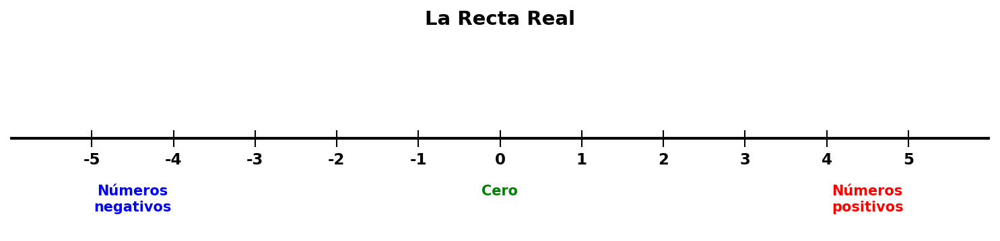
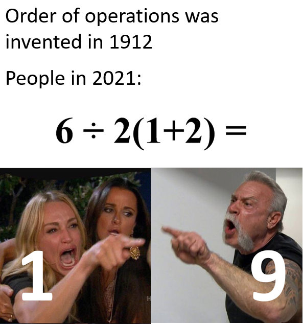

La Recta Real y los Números Reales¶
Repaso de los números reales¶
Los números reales son todos los números que existen: los naturales (1, 2, 3…), los enteros (…, -2, -1, 0, 1, 2…), los racionales (fracciones como ½, decimales como 3.14) y los irracionales (como √2 o π). Básicamente, cualquier número que puedas imaginar en una recta.
Números positivos y negativos¶
- Los números positivos (+)
- Son todos los números mayores que cero: 1, 2, 3, ½, π, √2… Se escriben con signo + o sin ningún signo. En la recta real están a la derecha del cero. Se usan para contar, medir temperaturas sobre cero, ganancias, altitudes sobre el nivel del mar, etc.
- Los números negativos (−)
- Son todos los números menores que cero: −1, −2, −3, −½… En la recta real están a la izquierda del cero. Se usan para temperaturas bajo cero, deudas, altitudes por debajo del nivel del mar, etc.
El cero (0) no es positivo ni negativo — es el punto neutral. Separa los positivos de los negativos en la recta.
Ejemplos cotidianos: - +12 °C (hace calor) vs. −5 °C (hace frío) - Tener +500 lempiras (dinero a tu favor) vs. −500 lempiras (le debes al banco) - +3 pisos (arriba de la planta baja) vs. −2 pisos (sótano)
1. Representación en la Recta Real¶
La recta real es una línea recta donde cada punto representa un número. Nos sirve para visualizar y ordenar los números.

Características¶
- Tiene dos direcciones: a la derecha del 0 van los números positivos, a la izquierda los negativos.
- Es infinita: se extiende sin fin en ambas direcciones (por eso las flechas en los extremos).
- Es continua: no hay "huecos" entre un número y otro. Entre dos números reales siempre hay infinitos números más.
- Cada número real tiene una única posición en la recta.
Propiedades importantes¶
| Propiedad | Explicación |
|---|---|
| Orden total | Dos números reales siempre se pueden comparar: uno es menor, igual o mayor que el otro. |
| Densidad | Entre dos números reales distintos siempre hay otro número real. Por ejemplo, entre 1.5 y 1.6 está 1.55, y entre 1.55 y 1.6 está 1.575… ¡y así hasta el infinito! |
| Completitud | La recta real no tiene "saltos". A diferencia de los números racionales, los números reales llenan toda la recta sin dejar espacios. |
2. Propiedades de la Igualdad¶
Cuando decimos que dos números son iguales (a = b), se cumplen estas propiedades:
Propiedades de la igualdad¶
| Propiedad | Significado | Ejemplo |
|---|---|---|
| Reflexiva | Todo número es igual a sí mismo | 5 = 5 |
| Simétrica | Si a = b, entonces b = a | Si x = 3, entonces 3 = x |
| Transitiva | Si a = b y b = c, entonces a = c | Si x = y y y = 5, entonces x = 5 |
3. Relación de Orden en los Números Reales¶
Los números reales tienen un orden natural. Decimos que a es menor que b (a < b) si a está a la izquierda de b en la recta real.
Propiedades de la relación de orden¶
| Propiedad | Significado | Ejemplo |
|---|---|---|
| Tricotomía | Dados dos números a y b, solo una es cierta: a < b, a = b, o a > b | -3 < 2, 4 = 4, 7 > 0 |
| Transitiva | Si a < b y b < c, entonces a < c | Si 2 < 5 y 5 < 10, entonces 2 < 10 |
| Antisimétrica | Si a ≤ b y b ≤ a, entonces a = b | — |
| Aditiva | Si a < b, entonces a + c < b + c | Si 3 < 7, entonces 3 + 2 < 7 + 2 |
4. Operaciones Algebraicas con Números Reales¶
Los números reales se pueden sumar, restar, multiplicar y dividir (excepto por cero). Estas operaciones siguen reglas bien definidas.
Suma y resta¶
| Regla | Ejemplo |
|---|---|
| Signos iguales → se suman y se conserva el signo | 5 + 3 = 8, (-5) + (-3) = -8 |
| Signos diferentes → se restan y se pone el signo del mayor | 5 + (-3) = 2, (-5) + 3 = -2 |
| Restar un número es lo mismo que sumar su inverso aditivo | 5 – 3 = 5 + (-3) |
Multiplicación y división¶
| Regla | Ejemplo |
|---|---|
| Signos iguales → resultado positivo | 5 × 3 = 15, (-5) × (-3) = 15 |
| Signos diferentes → resultado negativo | 5 × (-3) = -15, (-5) × 3 = -15 |
| Dividir entre cero no está definido | 5 ÷ 0 no existe |
Inverso Aditivo¶
El inverso aditivo de un número a es el número que, sumado con a, da cero. Es simplemente cambiarle el signo al número.
- El inverso aditivo de 5 es -5, porque 5 + (-5) = 0.
- El inverso aditivo de -8 es 8, porque (-8) + 8 = 0.
- El inverso aditivo de 0 es 0, porque 0 + 0 = 0.
- El inverso aditivo de √2 es -√2, porque √2 + (-√2) = 0.
- El inverso aditivo de -¾ es ¾, porque -¾ + ¾ = 0.
| Número | Inverso Aditivo | Suma |
|---|---|---|
| 7 | -7 | 7 + (-7) = 0 |
| -4 | 4 | (-4) + 4 = 0 |
| ½ | -½ | ½ + (-½) = 0 |
También se le llama opuesto de un número. Sirve para restar: restar un número es sumar su inverso aditivo.
Fórmula: a – b = a + (inverso aditivo de b)
Recíproco de un número¶
El recíproco (o inverso multiplicativo) de un número a (distinto de cero) es el número que, multiplicado por a, da 1. Se obtiene invirtiendo la fracción:
- El recíproco de 5 es ⅕ (un quinto), porque 5 × ⅕ = 1.
- El recíproco de -3 es -⅓, porque (-3) × (-⅓) = 1.
- El recíproco de ½ es 2, porque ½ × 2 = 1.
- El recíproco de -¾ es -⁴⁄₃, porque (-¾) × (-⁴⁄₃) = 1.
- El recíproco de √2 es 1/√2, porque √2 × 1/√2 = 1.
| Número | Recíproco | Multiplicación |
|---|---|---|
| 7 | 1/7 | 7 × 1/7 = 1 |
| -4 | -¼ | (-4) × (-¼) = 1 |
| ⅔ | 3/2 | (⅔) × (3/2) = 1 |
| 0.5 | 2 | 0.5 × 2 = 1 |
⚠️ El cero no tiene recíproco porque no existe ningún número que multiplicado por 0 dé 1.
El recíproco sirve para dividir: dividir entre un número es lo mismo que multiplicar por su recíproco.
Fórmula: a ÷ b = a × (recíproco de b), con b ≠ 0
Comparación rápida¶
| Concepto | Operación | Resultado | Ejemplo |
|---|---|---|---|
| Inverso aditivo | Suma | Da 0 | 5 + (-5) = 0 |
| Recíproco | Multiplicación | Da 1 | 5 × ⅕ = 1 |
5. Valor Absoluto¶
El valor absoluto de un número es su distancia del cero en la recta real. Como las distancias siempre son positivas (no puedes estar a −5 metros de algo), el valor absoluto siempre es un número no negativo.
Definición (nivel secundaria/preparatoria): El valor absoluto de un número a, escrito |a|, es:
- Si a es positivo o cero, entonces |a| = a
- Si a es negativo, entonces |a| = −a (es decir, le quitamos el signo)
Ejemplos:
- |5| = 5 porque 5 ya es positivo
- |−5| = 5 porque −5 es negativo, y al quitarle el signo queda 5
- |0| = 0
- |−12| = 12
- |+7| = 7
Interpretación geométrica: |a| es la distancia entre el punto a y el punto 0 en la recta real. Así, |3| = 3 porque el 3 está a 3 unidades del cero, y |−3| = 3 porque el −3 también está a 3 unidades del cero (pero del lado izquierdo).
Propiedades importantes: * Positividad: \(|a| \geq 0\) * Si \(a<b\), entonces \(|b - a| = b-a\) * Si \(a>b\), entonces \(|b - a| = a - b\)
6. Distributividad¶
La multiplicación es distributiva respecto a la suma (y la resta). Esto significa que puedes "expandir" o "factorizar" expresiones con paréntesis.
Fórmula: a × (b + c) = a × b + a × c
Ejemplos:
- 3 × (4 + 5) = 3 × 4 + 3 × 5 = 12 + 15 = 27
- 2 × (7 − 3) = 2 × 7 − 2 × 3 = 14 − 6 = 8
- (6 + 2) × 5 = 6 × 5 + 2 × 5 = 30 + 10 = 40
La distributividad funciona en ambos sentidos:
- Expandir: a(b + c) → ab + ac
- Factorizar: ab + ac → a(b + c)
Factorizar es útil para simplificar fracciones:
Casos importantes¶
| Expresión | Expandida | Simplificada |
|---|---|---|
| (a + b)(c + d) | ac + ad + bc + bd | — |
| (a + b)² | a² + 2ab + b² | — |
| (a − b)² | a² − 2ab + b² | — |
7. Cambio de signo (multiplicar por un número negativo)¶
Multiplicar un número por −1 invierte su signo:
Fórmula: (−1) × a = −a
Multiplicar por −1 es equivalente al inverso aditivo: cambiarle el signo.
Ejemplos:
- (−1) × 7 = −7
- (−1) × (−5) = 5
- −(a − b) = −a + b (aplicando distributividad)
Regla práctica¶
| Multiplicar por | Efecto | Ejemplo |
|---|---|---|
| +1 | No cambia nada | 5 × 1 = 5 |
| −1 | Invierte el signo | 5 × (−1) = −5 |
| +2 | Duplica, mismo signo | 5 × 2 = 10 |
| −2 | Duplica, signo invertido | 5 × (−2) = −10 |
Importante: resolver paréntesis primero¶
Cuando hay un signo negativo delante de un paréntesis, hay que aplicarle la distributividad:
- −(a + b) = −a − b
- −(a − b) = −a + b
- −(−a) = a
Ejemplo:
8. Orden de operaciones (PEMDAS)¶
Cuando una expresión tiene varias operaciones, hay que seguir un orden para obtener el resultado correcto. Se conoce como PEMDAS (o "PEMDAS" en español):
| Letra | Significado | Operaciones |
|---|---|---|
| P | Paréntesis | Primero: resolver todo lo que esté dentro de paréntesis, corchetes o llaves |
| E | Exponentes | Segundo: potencias y raíces |
| M | Multiplicación | Tercero: multiplicaciones de izquierda a derecha |
| D | División | Tercero: divisiones de izquierda a derecha |
| A | Adición (Suma) | Cuarto: sumas de izquierda a derecha |
| S | Sustracción (Resta) | Quinto: restas de izquierda a derecha |
⚠️ Importante: La M y la D están al mismo nivel — se hacen de izquierda a derecha, lo mismo para la A y la S.
Ejemplo paso a paso:
- P (paréntesis): 4 − 1 = 3 → 3 + 2 × 3²
- E (exponentes): 3² = 9 → 3 + 2 × 9
- M (multiplicación): 2 × 9 = 18 → 3 + 18
- A (suma): 3 + 18 = 21
Errores comunes¶
| Expresión | Error (PEMDAS mal aplicado) | Correcto |
|---|---|---|
| 8 ÷ 4 × 2 | Hacer la multiplicación primero: 8 ÷ (4 × 2) = 1 | De izquierda a derecha: (8 ÷ 4) × 2 = 4 |
| 2 + 3 × 4 | Sumar primero: (2 + 3) × 4 = 20 | Multiplicar primero: 2 + (3 × 4) = 14 |
El meme clásico¶
Y precisamente por esto los memes de PEMDAS se vuelven virales... 😄

¿Te suena familiar? Probablemente alguien falló en recordar que la M viene antes que la A.
9. Propiedades de las Potencias (exponentes enteros)¶
Una potencia es una forma abreviada de escribir un producto repetido: \(a^n\) significa "\(a\) multiplicado por sí mismo \(n\) veces".
Base: el número que se repite Exponente: cuántas veces se repite
Propiedades fundamentales¶
| Propiedad | Fórmula | Ejemplo |
|---|---|---|
| Producto de potencias (misma base) | \(a^m \times a^n = a^{m+n}\) | \(3^2 \times 3^4 = 3^{2+4} = 3^6\) |
| Cociente de potencias (misma base) | \(a^m \div a^n = a^{m-n}\) | \(5^4 \div 5^2 = 5^{4-2} = 5^2\) |
| Potencia de una potencia | \((a^m)^n = a^{m \times n}\) | \((2^3)^2 = 2^{3 \times 2} = 2^6\) |
| Potencia de un producto | \((a \times b)^n = a^n \times b^n\) | \((3 \times 4)^2 = 3^2 \times 4^2\) |
| Potencia de un cociente | \((a \div b)^n = a^n \div b^n\) | \((6 \div 2)^2 = 6^2 \div 2^2\) |
Casos especiales¶
| Caso | Regla | Ejemplo |
|---|---|---|
| \(a^0\) | \(= 1\) (para \(a \neq 0\)) | \(5^0 = 1\) |
| \(a^1\) | \(= a\) | \(7^1 = 7\) |
| \(a^{-n}\) | \(= 1 / a^n\) | \(2^{-3} = 1 / 2^3 = 1/8\) |
| \(1^n\) | \(= 1\) | \(1^{100} = 1\) |
| \((-a)^n\) (n par) | \(= a^n\) | \((-3)^4 = 3^4 = 81\) |
| \((-a)^n\) (n impar) | \(= -a^n\) | \((-3)^3 = -3^3 = -27\) |
Errores comunes¶
| Error | Corrección |
|---|---|
| \(a^m \times a^n = a^{m \times n}\) | ❌ |
| \((a + b)^n = a^n + b^n\) | ❌ |
| \(a^m \div a^n = a^{m \div n}\) | ❌ |
| \(a^{-n} = -a^n\) | ❌ |
10. La raíz n-ésima de un número real¶
Hasta ahora hemos hablado de elevar un número a una potencia (por ejemplo, 3² = 9). La raíz n-ésima es la operación inversa: cuando conocemos el resultado y la potencia, buscamos la base.
Definición¶
Si \(a^n = b\), entonces \(a\) es una raíz n-ésima de \(b\). Se escribe así:
donde: - \(n\) es el índice de la raíz (indica qué tipo de raíz) - \(b\) es el radicando (el número dentro de la raíz) - el símbolo \(\sqrt{}\) es el símbolo de raíz
Ejemplos básicos¶
| Operación | Se lee | Significado |
|---|---|---|
| \(\sqrt{9}\) | raíz cuadrada de 9 | "¿Qué número al cuadrado da 9?" → 3 |
| \(\sqrt[3]{8}\) | raíz cúbica de 8 | "¿Qué número al cubo da 8?" → 2 |
| \(\sqrt[4]{16}\) | raíz cuarta de 16 | "¿Qué número elevado a la 4ta da 16?" → 2 |
La raíz cuadrada especial¶
La raíz cuadrada (\(n = 2\)) es la más común. Cuando ves \(\sqrt{9}\), sin índice, siempre se entiende que es raíz cuadrada:
⚠️ ¡Atención! El número −3 también cumple (−3)² = 9. Sin embargo, por convención, la raíz cuadrada se define como el valor positivo. Por eso \(\sqrt{9} = 3\) (no −3). En cambio, la raíz cúbica SÍ puede ser negativa: \(\sqrt[3]{-8} = -2\) porque \((−2)^3 = -8\).
Raíces de números especiales¶
| Raíz | Resultado | Verificación |
|---|---|---|
| \(\sqrt{1}\) | 1 | 1² = 1 |
| \(\sqrt{0}\) | 0 | 0² = 0 |
| \(\sqrt{144}\) | 12 | 12² = 144 |
| \(\sqrt{2}\) | ≈ 1.4142... | es un número irracional |
| \(\sqrt[3]{-27}\) | −3 | (−3)³ = −27 |
| \(\sqrt[4]{81}\) | 3 | 3⁴ = 81 |
Propiedades de las raíces¶
| Propiedad | Fórmula | Ejemplo |
|---|---|---|
| Producto de raíces del mismo índice | \(\sqrt[n]{a} \times \sqrt[n]{b} = \sqrt[n]{a \times b}\) | \(\sqrt{2} \times \sqrt{8} = \sqrt{16} = 4\) |
| Cociente de raíces del mismo índice | \(\dfrac{\sqrt[n]{a}}{\sqrt[n]{b}} = \sqrt[n]{\dfrac{a}{b}}\) | \(\sqrt{12} / \sqrt{3} = \sqrt{4} = 2\) |
| Raíz de una raíz | \(\sqrt[m]{\sqrt[n]{a}} = \sqrt[m \times n]{a}\) | \(\sqrt{\sqrt{16}} = \sqrt[4]{16} = 2\) |
| Raíz de una potencia | \(\sqrt[n]{a^n} = a\) (si \(a \geq 0\)) | \(\sqrt{5^2} = 5\) |
Conexión con las potencias¶
Las raíces y las potencias son operaciones inversas. Esta conexión es muy útil para simplificar expresiones:
| Raíz | Como potencia | Resultado |
|---|---|---|
| \(\sqrt{a}\) | \(a^{1/2}\) | \(\sqrt{a}\) |
| \(\sqrt[3]{a}\) | \(a^{1/3}\) | raíz cúbica |
| \(\sqrt[n]{a}\) | \(a^{1/n}\) | raíz n-ésima |
💡 Regla fácil: la raíz n-ésima de \(a\) es lo mismo que elevar \(a\) a la potencia \(1/n\).
11. La definición 1/n (el recíproco del exponente)¶
Recordemos que el recíproco (o inverso) de un número es cuando le das vuelta. El recíproco de 2 es \(\dfrac{1}{2}\), el de \(\dfrac{3}{4}\) es \(\dfrac{4}{3}\).
Con los exponentes pasa algo similar, pero el recíproco del exponente (es decir, \(\frac{1}{n}\)) nos da raíces.
La idea central¶
Si \(a^n = b\), entonces \(a = b^{1/n}\).
El exponente \(\dfrac{1}{n}\) significa: "buscar la raíz n-ésima".
Ejemplos concretos¶
| Exponente | Significado | Ejemplo | Resultado |
|---|---|---|---|
| \(a^{1/2}\) | Buscar la raíz cuadrada | \(36^{1/2}\) | \(\sqrt{36} = 6\) |
| \(a^{1/3}\) | Buscar la raíz cúbica | \(8^{1/3}\) | \(\sqrt[3]{8} = 2\) |
| \(a^{1/4}\) | Buscar la raíz cuarta | \(16^{1/4}\) | \(\sqrt[4]{16} = 2\) |
| \(a^{1/5}\) | Buscar la raíz quinta | \(32^{1/5}\) | \(\sqrt[5]{32} = 2\) |
Ejemplo paso a paso¶
¿Cuánto es \(64^{1/3}\)?
- \(64^{1/3}\) significa "la raíz cúbica de 64"
- Nos preguntamos: ¿qué número elevado al cubo da 64?
- \(4 \times 4 \times 4 = 64\)
- Entonces \(64^{1/3} = 4\)
La lógica del 1/n en una tabla¶
| Si \(a^{1/n}\) elevado a la \(n\)... | Resultado | Explicación |
|---|---|---|
| \((a^{1/n})^n\) | \(a^{1/n \times n} = a^1 = a\) | Por la propiedad de potencias |
| Entonces \(a^{1/n}\) es la raíz n-ésima de \(a\) | \(\sqrt[n]{a}\) | Definición |
💡 Para recordar: cuando el exponente es una fracción \(\dfrac{1}{n}\), el denominador te dice qué raíz buscar. El numerador 1 te dice que estás buscando la "primera" raíz (la normal).
12. Potencias racionales (exponentes fraccionarios)¶
Ya sabes que \(a^{1/n}\) es la raíz n-ésima de \(a\). ¿Qué pasa cuando el exponente es una fracción más general, como \(\dfrac{m}{n}\)?
Definición¶
Una potencia racional es aquella donde el exponente es una fracción de números enteros: \(\dfrac{m}{n}\). Se define así:
Es decir: primero elevas a la \(m\), luego sacas la raíz \(n\)-ésima, o al revés — el resultado es el mismo.
Ejemplos¶
| Expresión | Interpretación | Desarrollo | Resultado |
|---|---|---|---|
| \(8^{2/3}\) | "(raíz cúbica de 8) al cuadrado" | \(\sqrt[3]{8} = 2\), luego \(2^2 = 4\) | 4 |
| \(16^{3/4}\) | "(raíz cuarta de 16) al cubo" | \(\sqrt[4]{16} = 2\), luego \(2^3 = 8\) | 8 |
| \(9^{3/2}\) | "(raíz cuadrada de 9) al cubo" | \(\sqrt{9} = 3\), luego \(3^3 = 27\) | 27 |
| \(4^{5/2}\) | "(raíz cuadrada de 4) a la 5ta" | \(\sqrt{4} = 2\), luego \(2^5 = 32\) | 32 |
Paso a paso con \(8^{2/3}\)¶
- Identifica el numerador y el denominador: \(m = 2\), \(n = 3\)
- El denominador \(n\) dice qué raíz: raíz cúbica (\(\sqrt[3]{}\))
- El numerador \(m\) dice qué potencia: elevar a la 2
- Aplica: \(8^{2/3} = (\sqrt[3]{8})^2 = (2)^2 = 4\)
- Verifica: si \((8^{2/3})^3 = 8^2 = 64\), entonces \(8^{2/3} = \sqrt[3]{64} = 4\) ✅
Propiedades que siguen vigentes¶
Todas las propiedades de las potencias que ya conocías funcionan también con exponentes racionales:
| Propiedad | Fórmula | Ejemplo |
|---|---|---|
| Producto | \(a^{m/n} \times a^{p/q} = a^{m/n + p/q}\) | \(4^{1/2} \times 4^{1/2} = 4^{1} = 4\) |
| Potencia de potencia | \((a^{m/n})^{p/q} = a^{m/n \times p/q}\) | \((9^{1/2})^3 = 9^{3/2} = 27\) |
| Cociente | \(a^{m/n} / a^{p/q} = a^{m/n - p/q}\) | \(8^{2/3} / 8^{1/3} = 8^{1/3} = 2\) |